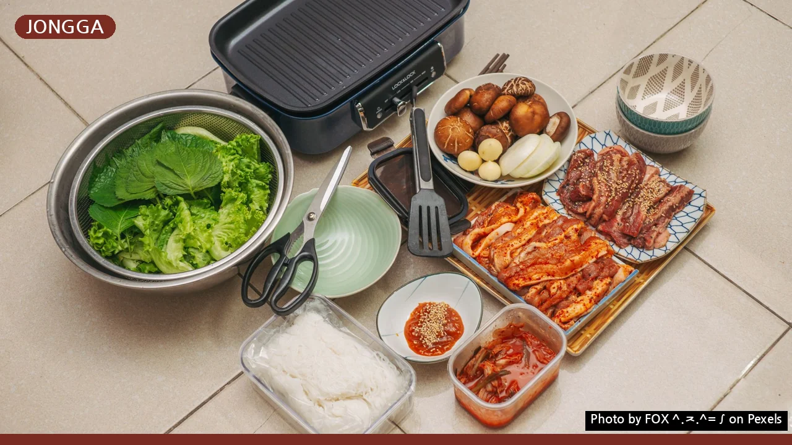
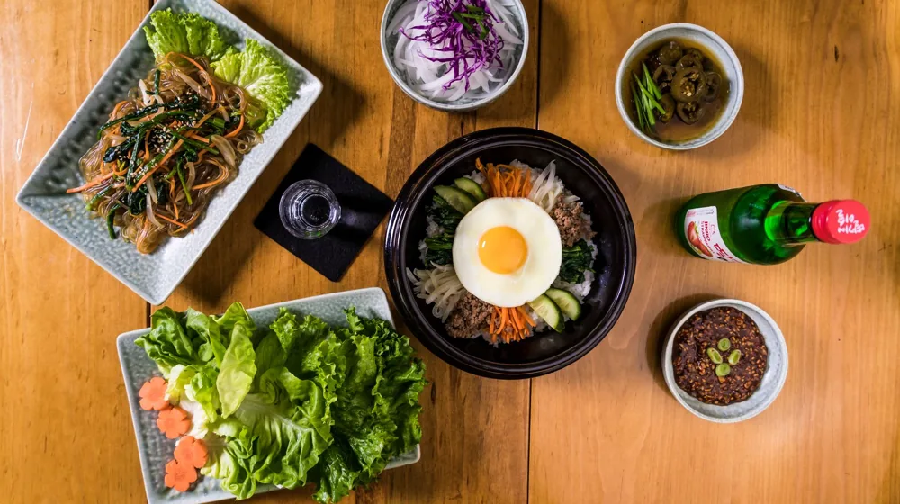

안동 종가음식, 평범한 한정식과 뭐가 다를까? 놓치지 말아야 할 방문 팁
사진: FOX ^.ᆽ.^= ∫ / Pexels (무료 이미지, 출처 표기)
안동 종가음식, 평범한 한정식과 무엇이 다를까요?

안동 종가음식 방문을 계획 중이신가요? 평범한 한정식과는 다른 깊은 역사와 전통을 품고 있어 특별한 미식 경험을 선사합니다. 단순한 식사를 넘어 조상들의 지혜와 삶의 방식을 엿볼 수 있는 안동 종가음식. 이 글에서는 종가음식이 일반 한정식과 어떤 차이가 있는지, 어떤 메뉴를 맛봐야 할지, 그리고 방문 시 꼭 알아두어야 할 주의사항까지 자세히 안내해 드립니다.
안동 종가음식은 단순히 잘 차려진 한 상차림을 넘어, 종가(宗家, 한 가문의 대를 잇는 맏집)의 전통과 정신이 담긴 음식을 의미합니다. 수백 년간 이어져 온 가문의 조리법과 의례에 따라 만들어지며, 식재료 선택부터 상차림까지 모든 과정에 깊은 의미가 배어 있습니다.
이는 단순히 맛있는 음식을 먹는 것을 넘어, 과거로의 시간 여행과 같은 문화적 경험을 제공합니다.
안동 종가음식 방문 전, 꼭 맛봐야 할 대표 메뉴
안동 종가음식은 계절에 따라, 종가에 따라 상차림이 달라질 수 있습니다. 하지만 안동을 대표하는 종가음식 중에서 특히 인상 깊은 몇 가지 메뉴는 다음과 같습니다.
- 헛제사밥: 제사를 지내지 않고도 제사상 음식을 맛볼 수 있도록 만든 비빔밥입니다. 고사리, 도라지, 탕국 등의 나물과 어적(생선 구이), 산적(꼬치), 돔배기(상어 고기) 등이 어우러져 깊은 맛을 냅니다.
- 안동식혜: 우리가 흔히 아는 식혜와 달리, 생강과 고춧가루를 넣어 칼칼하면서도 시원한 맛이 특징입니다. 소화에 도움을 줘 식사 후 입가심으로 좋습니다.
- 문어숙회 & 돔배기: 안동은 바다가 없는 내륙 지역임에도 불구하고 예로부터 문어와 상어 고기를 귀한 제사상 음식으로 사용했습니다. 이 두 가지는 종가음식에서 빠질 수 없는 별미로 꼽힙니다.
- 건진국수: 메밀이나 밀가루로 만든 면을 찬물에 헹궈 육수에 말아 먹는 음식입니다. 담백하면서도 깔끔한 맛이 특징입니다.
각 종가나 식당마다 주력 메뉴와 구성이 다르니, 방문 전 어떤 음식을 맛볼 수 있는지 확인하는 것을 권장합니다.
특별한 경험을 위한 종가음식 방문 체크리스트
안동 종가음식은 일반 식당과는 다른 특별한 예절과 시스템을 가질 수 있습니다. 아래 체크리스트를 통해 방문 준비를 철저히 하고 더욱 만족스러운 경험을 해보세요.
- 사전 예약 필수: 많은 종가음식점은 소규모로 운영되거나, 특정 인원 이상만 받거나, 예약제로 운영됩니다. 2026년 11월 기준으로 대부분의 종가음식 전문점은 사전 예약 없이는 이용이 어렵습니다. 최소 며칠 전, 가능하다면 일주일 이상 여유를 두고 예약하는 것이 좋습니다.
- 이용 시간 확인: 점심/저녁 특정 시간대에만 운영하거나, 주말에만 여는 곳도 있습니다. 방문 전 운영 시간을 반드시 확인하세요.
- 메뉴 및 가격대 파악: 대부분 코스 요리로 제공되며, 가격대가 높은 편입니다. 예산과 식성에 맞는 메뉴 구성을 미리 확인하는 것이 현명합니다.
- 복장 및 태도: 전통적인 분위기인 만큼 너무 캐주얼하거나 소란스러운 태도는 지양하고, 단정한 복장과 차분한 태도를 유지하는 것이 좋습니다.
- 교통편 고려: 일부 종가음식점은 시내 외곽이나 한옥 마을 내에 위치해 대중교통 이용이 불편할 수 있습니다. 자가용 이용 또는 택시 등의 교통편을 미리 계획해야 합니다.
방문하려는 종가음식점의 공식 홈페이지나 안동시 관광정보센터(☎1330)를 통해 최신 정보를 확인하는 것이 가장 정확합니다.
안동 종가음식, 후회 없이 즐기기 위한 주의사항
특별한 경험인 만큼 미리 알아두면 좋을 주의사항도 있습니다.
- 대중적인 입맛과는 다를 수 있습니다: 종가음식은 전통적인 조리법을 고수하며, 자극적이지 않고 재료 본연의 맛을 강조합니다. 익숙한 맛과는 다를 수 있으니, 열린 마음으로 새로운 미식 경험에 도전해 보세요.
- 느린 식사를 즐길 준비: 음식이 나오는 속도가 일반 식당보다 느릴 수 있습니다. 이는 정성스럽게 준비하는 과정의 일부이므로, 여유를 가지고 식사를 즐기는 태도가 중요합니다.
- 알레르기 및 식단 조절 요청: 특정 식재료에 알레르기가 있거나 채식 등 식단 조절이 필요하다면 예약 시 미리 알려주어야 합니다. 전통 방식이라 즉석에서 변경이 어려울 수 있습니다.
- 문화 체험으로서의 접근: 단순히 한 끼 식사를 해결하는 것을 넘어, 안동의 유교 문화와 종가 정신을 이해하는 문화 체험의 연장선으로 접근하면 더욱 만족도가 높을 것입니다.
음식 하나하나에 담긴 스토리를 듣고 음미한다면 더욱 깊이 있는 경험을 할 수 있습니다.
깊은 맛의 안동 종가음식, 어디서 경험할 수 있나요?
안동에서 종가음식을 경험할 수 있는 곳은 크게 두 가지 유형으로 나뉩니다. 첫째는 종가에서 직접 운영하거나 종가의 전통을 이어받은 식당입니다. 이곳들은 비교적 접근성이 좋고, 종가음식을 코스 요리로 전문적으로 제공합니다. 둘째는 전통 한옥 체험 시설이나 문화원과 연계된 곳으로, 식사 외에 다도나 한옥 숙박 같은 문화 체험을 함께 제공하는 경우가 많습니다.
안동시청 문화관광과에 따르면, 현재(2026년 11월 기준) 공식적으로 종가음식을 경험할 수 있는 곳은 여러 곳이 있으며, 각각의 특색이 다릅니다. 이들 정보는 안동시청 문화관광 홈페이지에서 최신 목록과 상세 정보를 확인할 수 있습니다. 방문 전에는 반드시 운영 여부, 예약 방법, 메뉴 구성 등을 다시 한번 확인하시길 권장합니다.
안동 종가음식은 단순한 맛을 넘어, 한국의 깊은 역사와 전통, 그리고 조상들의 지혜를 오감으로 체험할 수 있는 특별한 기회입니다. 이 글에서 안내해 드린 정보들을 바탕으로 안동 종가음식을 통해 잊지 못할 미식 경험을 만드시길 바랍니다.
🔗 이 글도 함께 보면 좋아요: 안동 종가음식 체험, 어디서 어떻게? 예약부터 100% 즐기는 법
관련 추천 상품
안동 종가음식 밀키트, 안동 간고등어 선물세트 관련 인기 상품 보러가기
이 포스팅은 쿠팡 파트너스 활동의 일환으로, 이에 따른 일정액의 수수료를 제공받습니다.